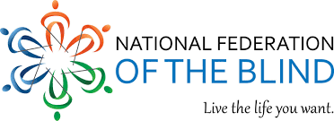

Blindness
There are 4 levels of visual function, according to the International Classification of Diseases -10 (Update and Revision 2006): normal vision moderate visual impairment severe visual impairment blindness. Moderate visual impairment combined with severe visual impairment are grouped under the term “low vision”: low vision taken together with blindness represents all visual impairment.
Approximately 90% of visually impaired people live in developing countries. People aged 50 and over About 65 % of all people who are visually impaired are aged 50 and older, while this age group comprises about 20 % of the world's population. With an increasing elderly population in many countries, more people will be at risk of visual impairment due to chronic eye diseases and ageing processes. Children below age 15 An estimated 19 million children are visually impaired. Of these, 12 million children are visually impaired due to refractive errors, a condition that could be easily diagnosed and corrected. 1.4 million are irreversibly blind for the rest of their lives and need visual rehabilitation interventions for a full psychological and personal development.
Overall, visual impairment worldwide has decreased since the early estimates in 1990s. This is despite an ageing global elderly population. This decrease is principally the result of a reduction in visual impairment from infectious diseases through: overall socioeconomic development; concerted public health action; increased availability of eye care services; awareness of the general population about solutions to the problems related to visual impairment (surgery, refraction devices, etc.
Globally, 80% of all visual impairment can be prevented or cured. Areas of progress over the last 20 years include: governments established national programmes and regulations to prevent and control visual impairment; eye care services increasingly available and progressively integrated into primary and secondary health care systems, with a focus on the provision of services that are high quality, available and affordable; campaigns to educate about visual function importance and raise awareness, including school-based education; and stronger government leadership on international partnerships, with increasing engagement of the private sector. Data over the last 20 years shows that there has been significant progress in preventing and curing visual impairment in many countries. Furthermore, the massive reduction in onchocerciasis- and trachoma-related blindness is part of a significant reduction in the disease distribution and has substantially reduced the burden resulting from these infectious diseases. This has been achieved through a number of successful international public-private partnerships. Specific achievements include: Brazil which in the last decade has been providing eye care services through the national social security system; Morocoo which has launched a public effort to control glaucoma; China which has invested over 100 million dollars in cataract surgeries since 2009; Oman has completely integrated eye care service provision in the primary health care framework over the last decade; and India since 1995 has made available funds for eye care service provision for the poorest at district level. The largest civil society effort to prevent and cure blinding disease and rehabilitate people whose irreversibly visually impaired or blind is the SightFirst programme of the International Association of the Lions Club (LIONS). Among others, this programme supports the largest initiative to develop child eye care centres (45 national reference paediatric centres established in 35 countries so far), implemented in partnership with WHO. WHO response WHO coordinates the international efforts to reduce visual impairments. It's role is to: monitor the worldwide trends of visual impairment by country and by region; develop policies and strategies to prevent blindness appropriate for various development settings; to give technical assistance to Member States and partners; to plan, monitor and evaluate programmes; and to coordinate effective international partnerships in support of national efforts. In 2013, the World Health Assembly approved the 2014-19 Action Plan for the universal access to eye health, a roadmap for Member States, WHO Secretariat and international partners with the aim of achieving a measurable reduction of 25% of avoidable visual impairments by 2019. WHO works to strengthen national and country-level efforts to eliminate avoidable blindness, help national health care providers treat eye diseases, expand access to eye health services, and increase rehabilitation for people with residual visual impairment or who are blind. Building accessible and comprehensive health systems is the focus of this decade. WHO leads several international alliances of governments, private sector and civil society organizations aiming at contributing to the elimination of blinding diseases. It also provides technical leadership to specific disease efforts which are deployed by its partners or the private sector to eliminate trachoma from the world by the year 2020. For the last two decades WHO has worked with a network of international partners and private sector to ensure that appropriate, updated, good quality eye care solutions were made available to the people in need. Since 2004, WHO in partnership with Lions Clubs International has established a global network of 45 childhood blindness centres in 35 countries for the preservation, restoration or rehabilitation of sight in children. This unique and innovative global project has served so far more than 150 million children and will open 10 additional eye care service centres for the children in 10 new countries in 2014. The centres will help combat to fight avoidable childhood blindness and help securing a future with full visual function for the children in need of care. In response to the increasing burden of chronic eye disease WHO is coordinating a global research effort to map services and policies for controlling diabetic retinopathy, glaucoma, age-related macular degeneration and refractive errors. Finally, to support comprehensive eye care systems, WHO continues to provide epidemiologic and public health technical support to its Member States.